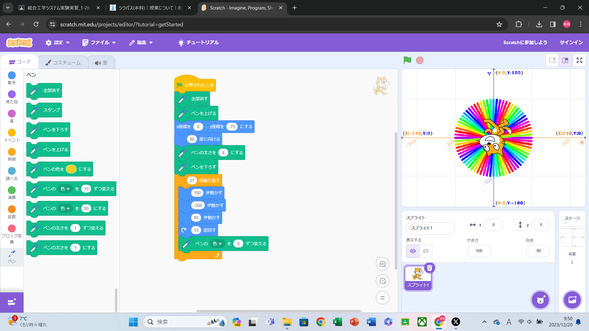
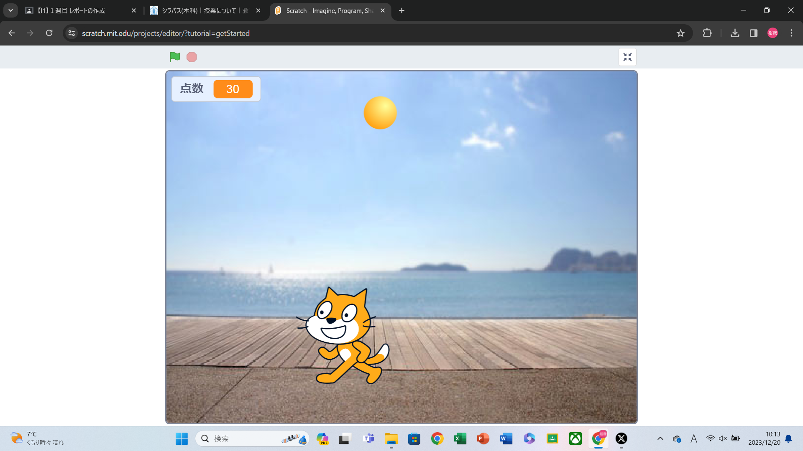

1週目のレポート ： 公大高専１年実習I-1
2b班31番 ゆうや
第1週目
1-1 サイエンスアート

1.内容
スクラッチを使って線を書くプログラムを使い自分なりの模様を描くもの。
2.感想
回数と動きを決めて繰り返すだけで予想外の模様が出来上がることに面白さを感じた。
1-2 ゲーム

1.内容
自分でプログラムを組んで落ちてくるものをキャラクターに拾わせるゲームを作る。
2.感想
あんな簡単にゲームが作れることに驚いた半面もっと作り変えて面白くできるなと思った。
1-3 ホームページ作成
私のホームページ
1.内容
もともと組まれているプログラムの文字を変えて、自分のホームページを作る。
2.感想
情報でプログラムの課題がありそれで見たことのある文字がならんでいた。 要素？の追加はできたが、黄色くなっている部分を長くすることはできなかった。